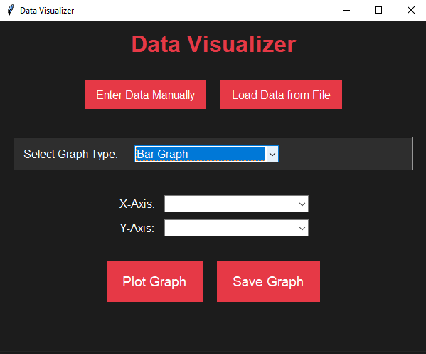

View on GitHub
View on GitHub
Overview
A Python-based tool for visualizing data with various chart types, providing an intuitive user interface for easy interaction.
A Python-based tool for visualizing data with various chart types, providing an intuitive user interface for easy interaction.
This project demonstrates skills in data visualization, user interface development, and data handling, applicable in analytics, business intelligence, and research.
A practical and user-friendly tool showcasing expertise in Python, data visualization, and UI design for effective data representation.
